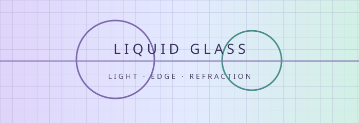

● 一切就绪
YOUR QUIET SPACE专注于，
专注于，
此刻的美好。
留一点空间，让灵感自然发生。
专注模式为重要的事，保持安静
今日进度68%
留一点空间，让灵感自然发生。
搜索组件，或从下方分类开始。
25+ 组件与变体，点击即可体验。
专属追光与 3D 卡片体验
移动到中心，看柔光跟随；靠近边缘，看局部高光；扫过四角，感受轻微倾斜。
径向光斑留在磨砂表面里，光线柔和，前景文字始终清晰。
沿圆角边框慢慢移动，观察局部提亮，而不是整圈一起发光。
固定外框测量光标，内层卡片转动；总倾角不超过 4°，移出后自然复原。
将鼠标或触控笔移到左侧卡片上，开始体验。
触屏保留静态磨砂和可操作按钮；减少动态、实色表面与高对比偏好优先生效。调整效果偏好 →
点击、滑动、悬停。试试它们。
按钮 · 图标 · 状态反馈
复选 · 单选 · 开关 · 筛选标签
输入 · 搜索 · 下拉 · 滑块
五种常用组件，自然融入同一套材质。
点击头像，认识你的协作者。
第 1 页，共 3 页
每个链接都通向一个真实的位置。
这个展示站使用原生 HTML、CSS 和 JavaScript，无需构建或安装运行依赖。
按钮、表单、导航和弹层都保留原生语义，触屏无需悬停，键盘可通过 Tab 和方向键操作。
在“交互与状态”中选择静态质量或实色表面；系统的减少动态与高对比偏好也会生效。
选择预设，整页组件同步变化。
移动光标，或用滑块控制透镜的位置。

增强已关闭。上方为已知 SVG 背景的对照实验。
图片透镜只处理这张已知背景。该开关也尝试开启导航胶囊的背景位移，后者需要单独确认浏览器支持。
连续切换，观察前缘伸展与到位回弹。
聚焦、错误、加载与禁用都有明确反馈。
Tab 聚焦，Space 操作，焦点环始终可见。
动态效果已开启。系统减少动态偏好同样生效。
没有背景模糊时，以实色表面维持层次。
禁用项会被跳过。
纵向移动也保留连续弹簧状态。
零外部依赖，把喜欢的细节带入你的页面。
材质是起点。细节让它成为体验。
GLASS UI / LIVE PLAYGROUND